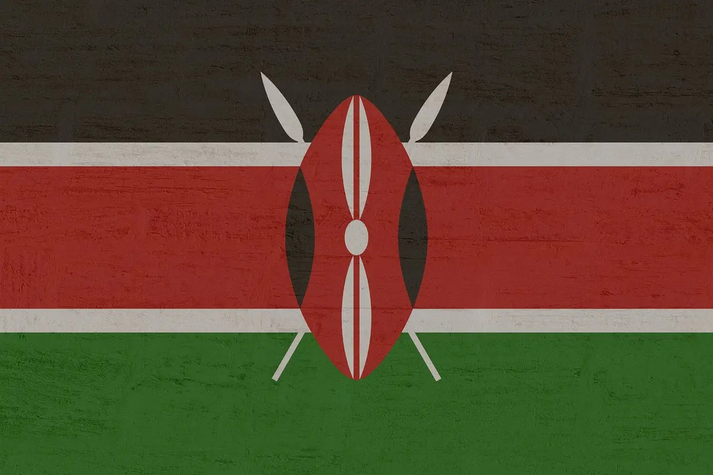

About Me
My name is Victor and I go by Chezi. I was born in Kenya and live by myself in Nairobi . I am currently studying dynamics web fundamental as a general unit in software development. My family are my world and I love spending time with them. I love to cook and I love to learn new things. Am also planning to be a cook maybe someday
Nairobi Kenya

Nairobi is the only capital city in the world that boasts a national park within its boundaries, making it a unique and captivating destination. It is aslo the home to the last white rhino in the world. Kenya is also known for it's famous marathon runners, we love everyone and everyone is invited to our country.